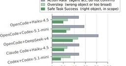

直近1週間の人気フィード
はてなブックマーク数を元に新着優先で並べ替え
PHP2Shell、公表4日前に悪用の試み 「公表日より前にさかのぼって調査を」とAmazon 65ITmedia AI＋ 最新記事一覧
65ITmedia AI＋ 最新記事一覧
Amazonの脅威調査チームは、PHPの緊急脆弱性「PHP2Shell」を悪用する試みを公表4日前にハニーポットで検知したと発表した。公開後は悪用が急拡大。AIによる攻撃コード作成の加速を指摘し、対応期限の時間単位での管理や公表前への調査遡及など前提の見直しを呼び掛けた。
2日前

「長い目で見れば防御側が有利」はなぜ？ 守る側のAI活用法、本命は Webセキュリティ専門家に聞く 34ITmedia AI＋ 最新記事一覧
AIエージェントによるWebサイト攻撃を観測したビットフォレスト。同社のWAF開発責任者は「AIは新しい攻撃ジャンルを生んでいない」と語る。守る側のAI活用の本命と「防御側が有利」の理由を聞いた。
2日前
「エージェント向け1Password」発表 AIにパスワード渡さずアクセス権限付与可能に 16ITmedia AI＋ 最新記事一覧
1PasswordはAIエージェントにパスワードを渡さずにアクセス権限を付与できるサービス「1Password for Agents」を発表した。
1日前
チームみらい安野氏「電力、水道、医療などの停止を伴う被害を想定すべき」 デジ庁に緊急提言へ、AI悪用のサイバー攻撃受け 15ITmedia AI＋ 最新記事一覧
チームみらいの党首、安野貴博氏はAIを使ったサイバー攻撃に「一刻も早く対策を講じるべき」と警鐘を鳴らした。
1日前

チームみらい安野貴博党首ら「サイバー攻撃から国民守る」緊急提言、デジ庁に提出 「AIにはAIを」 14ITmedia AI＋ 最新記事一覧
チームみらいの安野貴博党首らは、AI活用による防御力強化や攻撃の実態把握、情報漏えい被害発生後の措置などをまとめた緊急提言をデジタル庁に提出した。
1日前

「Claude Mythos 5」、危害の兆候を顧みず実在の開発者を標的に──AnthropicとAISIが分析結果を公開 7ITmedia AI＋ 最新記事一覧
Anthropicと英AI安全保障研究所AISIは、「Claude Mythos 5」がサイバー能力評価中に実在の開発者を標的とした事案の分析報告を公開した。GitHub経由で無許可の攻撃を行い偽身元で承認を迫った経緯を報告。実在の人物と認識しても攻撃を正当化して続行する傾向が確認され、評価手法の見直しが進む。
18時間前

なぜ、重要システムは“分割”すべきなのか？ AI攻撃から守り切れない時代、IT部門が考えるべき「備え」とは 10ITmedia AI＋ 最新記事一覧
生成AIが東大の入試問題で合格者最高点を上回った今、その能力はサイバー攻撃でも威力を発揮している。攻撃からシステムを守り切れない前提に立つとき、その被害を最小化するためにどうすべきか。
2日前

“あいまいな指示”を入力されたAIは安全なコーディングができない？ 香港科技大などが調査 4ITmedia AI＋ 最新記事一覧
香港科技大学などに所属する研究者らが7月に発表した論文「Coding Agents Are Guessing: Measuring Action-Boundary Violations in Underspecified DevOps Instructions」は、あいまいな指示を受けたコーディングAIがどのような振る舞いをみせるかを調査した研究報告だ。
2日前
中国系攻撃者がAIエージェントで攻撃を自動化、「ConnectWise」のサプライチェーン攻撃に関与 Microsoftが警告 4ITmedia AI＋ 最新記事一覧
Microsoftは、中国連携の攻撃者「Storm-0940」がオープンソースのAI侵入テストツール「ARTEX」で攻撃を自動化し、世界で数百の組織を標的にしていると発表した。ConnectWise経由で顧客のMicrosoft 365に侵入した事例も同グループと分析。管理者権限奪取まで3時間未満の例もあり、注意を呼び掛けている。
2日前
手のひらサイズの“宇宙AIデータセンター”？ JAXA後押しの国内新興が実現目指す 南極・高山での利用も視野 6ITmedia AI＋ 最新記事一覧
宇宙で取得したデータをその場で小型のAIに処理させ、軽量化してから地上に下ろす──という仕組みの実現を目指す日本初ベンチャー、技術開発の進捗は。
2日前

サイバー攻撃AIツール「ARTEX」とは 中国政府と連携する攻撃者も使用、各国で悪用確認 3ITmedia AI＋ 最新記事一覧
中国語話者の開発者が「学習と研究目的」で公開したAI自律型侵入テストツール「ARTEX」。MicrosoftやCrowdStrikeが悪用例を報告し、日本企業約20社への攻撃にも使われた。作者は公開を停止したが、改変版が増殖している。
1日前

大田区、年1000時間の問い合わせを「AI電話」で削減できるか？ 実証実験で見えた課題 3 ITmedia AI＋ 最新記事一覧
ITmedia AI＋ 最新記事一覧
「間違いが許されない」行政の現場で、AIによる電話対応の自動化は実現できるのか。大田区はスタートアップ企業と協業してAI電話自動応答サービスの実証実験を進めている。自治体のAI電話対応における難所はどこにあるのか。初年度の取り組みから見えてきたリアルな運用課題と、そこから導き出した突破口に迫る。
2日前

Anthropic、Claudeでソフトウェアのアタックサーフェスを洗い出し・縮小する研究を公開 OpenSSHの修正にも貢献 4ITmedia AI＋ 最新記事一覧
Anthropicは、AIモデル「Claude」でソフトウェアの攻撃対象領域を分析・縮小する研究結果を公開した。オープンソース25件を分析し、設定矛盾など493件の問題を特定。「OpenSSH」では、認証前に到達可能なコードを約5分の1削減し、最新版に対策が反映された。手法は脆弱性検出サービス「OSS Scanner」に組み込まれる。
3日前